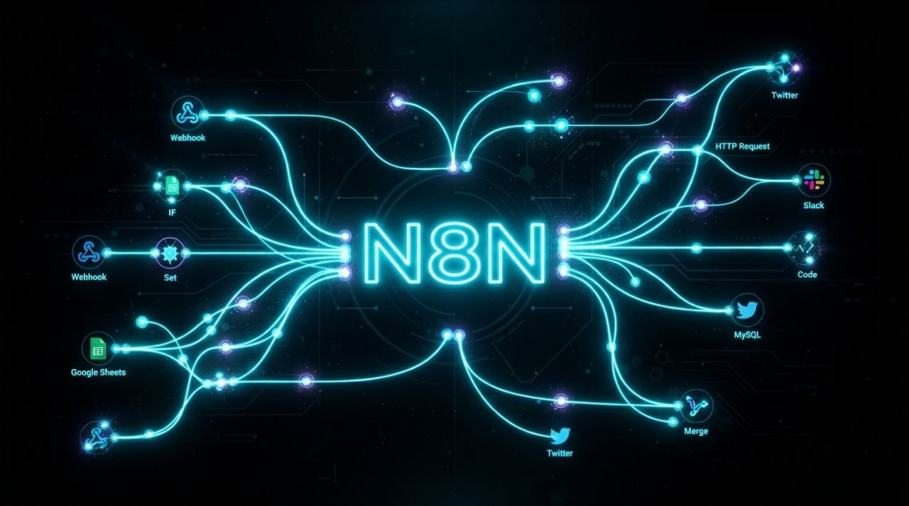

Все продукты V3Ko
Четыре AI-продукта для автоматизации бизнеса, работы с нейросетями и голосового общения — всё в Telegram
N8N Каталог
9 580 готовых n8n шаблонов для автоматизации бизнеса. Email-рассылки, Telegram-боты, AI-агенты, CRM-интеграции, обработка заказов. Импорт в один клик.

Промпты Дня
Ежедневные промпты для Midjourney, ChatGPT, Claude и Stable Diffusion. Создавай AI-картинки, пиши тексты, генерируй код. 20 самых популярных — бесплатно. 246+ в подписке с обновлениями каждый день.

AI Редакция
AI-редакция для Telegram-канала @ai_vmasterke. Автоматический сбор новостей про AI, рерайт с умным алгоритмом и публикация. Контент обновляется каждый день.
Voice Assistant
Голосовой AI-ассистент в Telegram на русском языке. Распознаёт речь через Whisper, отвечает голосом через Fish Audio TTS. Работает на DeepSeek и ChatGPT. Говори с AI как с человеком.